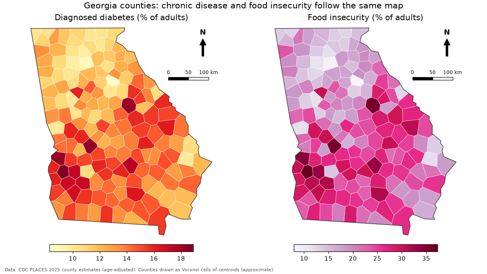
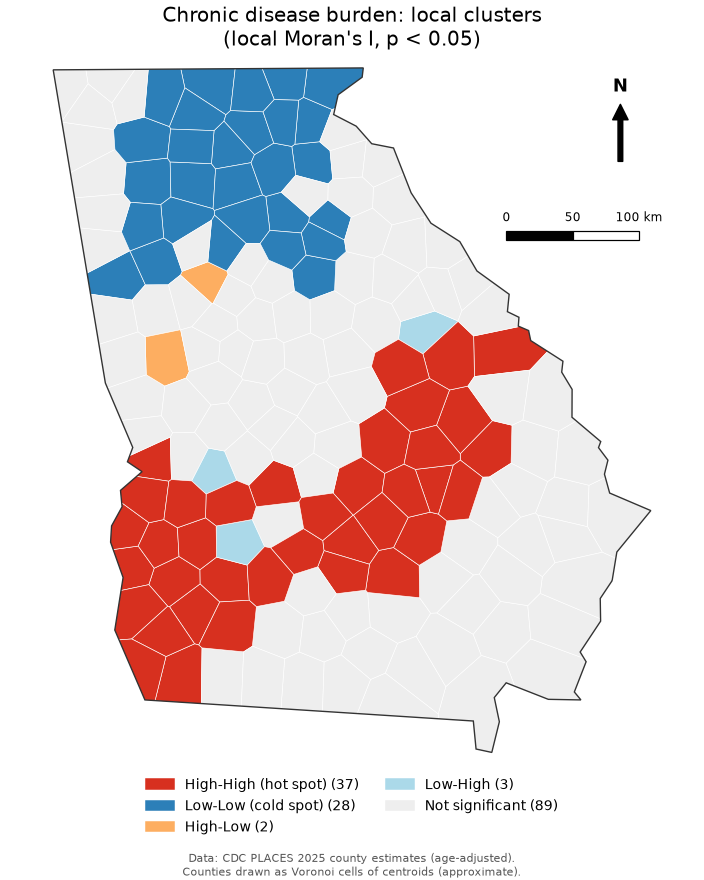

Where chronic disease clusters in Georgia
I mapped diabetes, heart disease and unmet social needs across all 159 Georgia counties. A hot-spot analysis shows two rural belts, a metro-north cold spot, and a few places a simple ranking would miss.
About 12% of adults in Georgia have been diagnosed with diabetes. That statewide number hides a lot. County by county, the figure ranges from 8.3% in Oconee County to 18.9% in Randolph County, more than twice as high. With 159 counties, more than any state except Texas, Georgia is a place where averages tell you very little.
I wanted to answer a more specific question: are the counties with the heaviest chronic-disease burden scattered across the state, or do they cluster together? The answer matters for policy. If high-burden counties sit next to each other, the causes are probably regional, and so are the solutions: shared hospitals and clinics, transportation, food systems and workforce programs that cross county lines.
The data
I used the CDC's PLACES 2025 estimates, which give age-adjusted prevalence for dozens of health measures in every US county. I combined five conditions into a chronic disease burden index: diabetes, obesity, coronary heart disease, stroke and high blood pressure. I combined four measures of unmet needs into a social needs index: food insecurity, housing insecurity, lack of reliable transportation and no health insurance. Then I tested for spatial clustering with Moran's I, a standard statistic in spatial analysis.

1. Chronic disease is strongly clustered
If Georgia's counties were shuffled randomly across the map, Moran's I would be close to zero. For the chronic disease burden index it is 0.54. Counties look a lot like their neighbors. I shuffled the counties 9,999 times, and not once did a random arrangement come out as clustered as the real map.
2. Two hot-spot belts in rural Georgia
Local Moran's I goes a step further and flags individual counties that are high and surrounded by high values. It finds 37 hot-spot counties, home to about 597,000 people, in two belts:
- Southwest Georgia: Randolph, Stewart, Terrell, Calhoun, Baker, Clay, Quitman, Dougherty (Albany) and their neighbors
- East-central to south-central Georgia: Jefferson, Washington, Johnson, Emanuel, Treutlen, Wheeler, Telfair and their neighbors

The gap between these belts and the rest of the state is large:
| Cluster | Counties | People | Diabetes | Food insecurity | Uninsured |
|---|---|---|---|---|---|
| Hot spots | 37 | 597,000 | 15.3% | 27.6% | 16.9% |
| Cold spots | 28 | 4.69 million | 11.2% | 15.5% | 13.2% |
In the hot spots, about 15 in every 100 adults have diagnosed diabetes, over a third more than in the cold spots. More than one in four adults reports food insecurity, nearly twice the cold-spot rate.
3. The cold spot is metro-north Georgia
The low-burden cluster runs from Cobb, Cherokee, Forsyth and Gwinnett up into the north Georgia mountains. Its 28 counties hold 4.7 million people, 42% of the state. Much of Georgia's population lives in the healthiest part of the map, which is one more reason statewide averages look better than conditions in rural Georgia.
4. What a ranking would miss
A simple "top 10 counties" list and a hot-spot map tell different stories:
- Clayton County has 16.1% adult diabetes and about 298,000 residents, roughly half as many people as all 37 hot-spot counties combined. Its neighbors in metro Atlanta have much lower burdens, so it stands out as a high-burden outlier rather than part of a rural belt. It needs a metro strategy, not a rural one.
- Hancock and Macon counties are among the four highest in the state for diabetes, yet neither falls inside a statistically significant cluster. Their high rates are real, but their neighborhoods are more mixed, so a regional program designed around the belts could overlook them.
5. Health and social needs travel together
Across counties, the social needs index and the chronic disease index are almost perfectly aligned (r = 0.97). 29 counties are in the top fifth of the state for both diabetes and food insecurity. Places where people struggle to afford food, keep housing or get to appointments are the same places carrying the most chronic disease.
An important caveat. PLACES numbers are model-based estimates. The CDC builds them from national survey data combined with each county's demographics, so measures that share demographic drivers are correlated partly by construction. The overlap above describes where burdens coincide. It does not prove that food insecurity causes diabetes. County averages also hide differences within counties, and the hot-spot tests are screening tools that aren't corrected for multiple comparisons.
What this suggests
The pattern points toward regional, not county-by-county, responses in the two rural belts. That could mean mobile clinics and telehealth that serve several counties, transportation to care, and food-access programs planned across county lines. It also points toward a separate urban approach for places like Clayton County.
Next, I plan to repeat the analysis with census-tract data to see variation within counties. I also want to combine it with my healthcare-access tool to test whether the hot-spot belts also have the least access to doctors.
Methods and code
Everything is reproducible. The data, the SQL database, the spatial statistics (written from scratch and unit-tested) and the figures are in the georgia-health-atlas repository on GitHub, along with the full results tables.